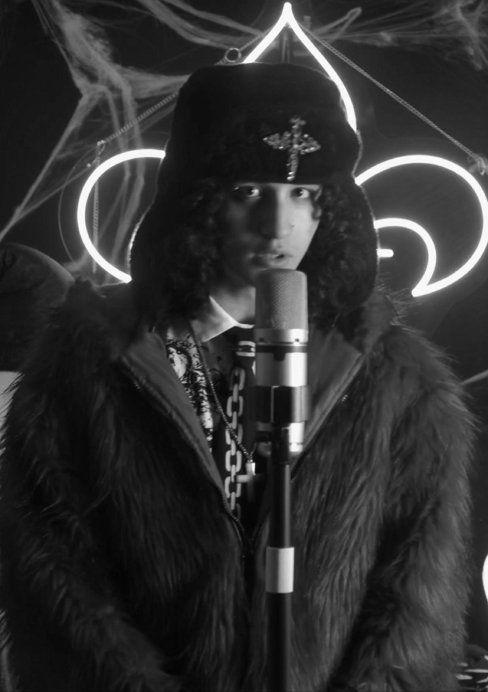
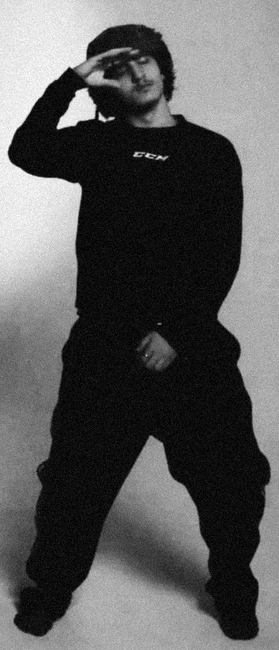
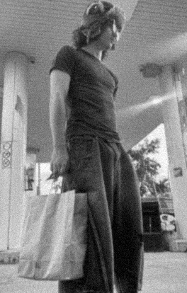
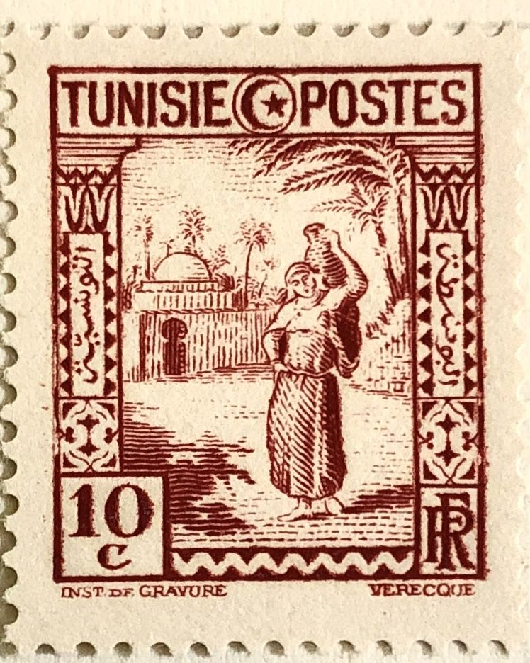

Unis
Unis is Younes Harrabi, born July 14, 2007 — a Tunisian-Ukrainian artist from Montreal on the indie label UNIXTY. He makes underground melodic rage rap.
Releases
- UNIS — album, 2025
- 2NIS — album, 2026
- PRELUDE — EP, 2026
- STRESS — single, 2025
- EIGHTEEN — single, 2025
- FAMILIAR FACES — single, 2026
- WE WILL BE OKAY — single, 2025


